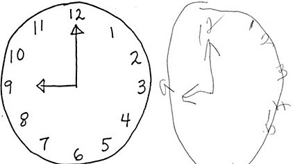
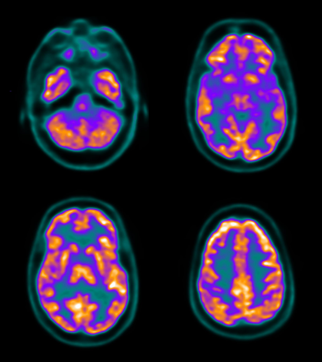
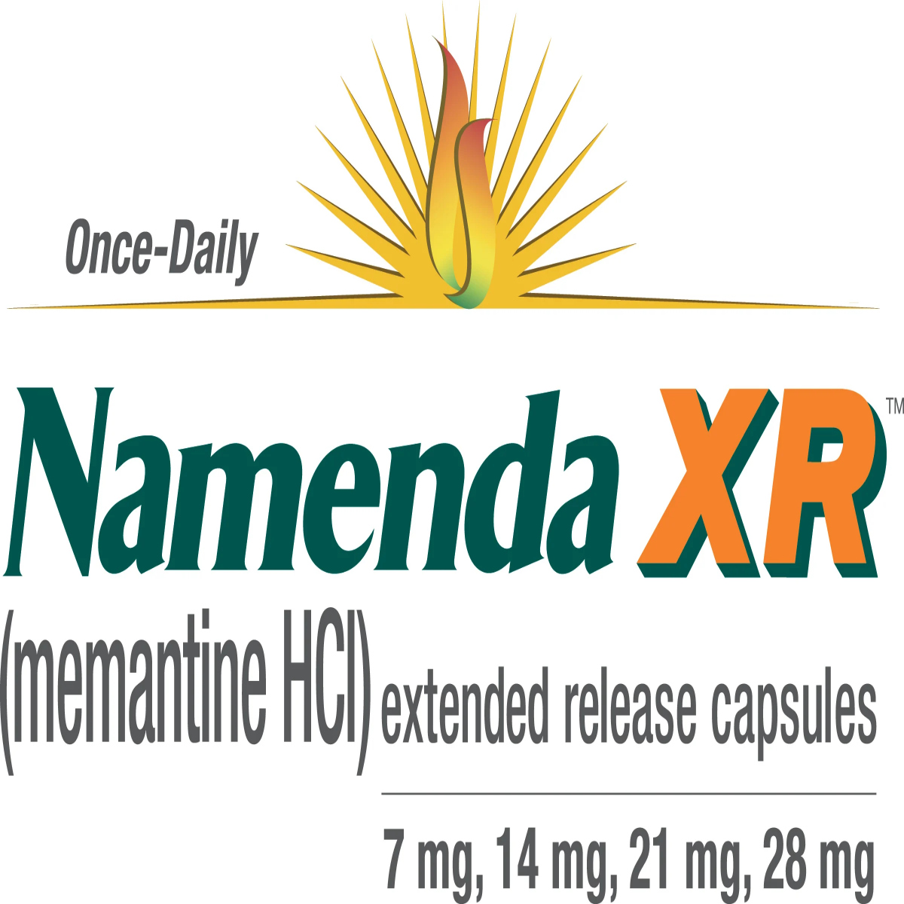
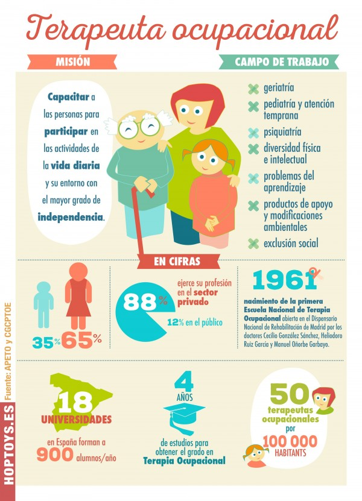

El proceso de diagnóstico
El diagnóstico precoz es fundamental para el manejo proactivo de los síntomas; sin embargo, los estudios muestran que los pacientes hispanos suelen retrasar la búsqueda de ayuda hasta dos años. El proceso de diagnóstico se basa en gran medida en cuantificar la diferencia entre la capacidad cognitiva actual y la anterior del paciente. Durante los exámenes neurológicos, los médicos pueden pedir a los pacientes que dibujen un reloj o que recuerden palabras recientes. En ambos casos, un familiar suele desempeñar un papel indispensable. Los hijos adultos suelen actuar como «guardianes de la memoria» y traductores médicos, tendiendo un puente sobre la brecha comunicativa entre el médico y el paciente.
Sin embargo, esta dinámica puede complicar los exámenes clínicos. El respeto cultural hacia los mayores o el hecho de restar importancia a la pérdida temprana de memoria como «chochera» (simplemente una parte normal del envejecimiento) puede, en ocasiones, enmascarar los síntomas, ya que los familiares pueden, sin darse cuenta, restar importancia a los cambios de comportamiento durante el interrogatorio para preservar la dignidad de sus padres.
Una vez establecidas las referencias neurológicas, los médicos recurren a pruebas de laboratorio, como análisis de sangre y escáneres cerebrales, para descartar afecciones reversibles como la deficiencia de vitamina B12 o la disfunción tiroidea.


Tratamiento
Aunque no existe cura, los tratamientos se centran en el control de los síntomas.
Los inhibidores de la colinesterasa, como el donepezilo (Aricept), pueden mejorar temporalmente la función cognitiva al inhibir la degradación de la acetilcolina, un neurotransmisor esencial para la memoria y el pensamiento, aunque conllevan efectos secundarios como mareos.
También se utiliza la terapia ocupacional para mejorar la seguridad en el hogar y reducir el riesgo de caídas mortales.
Lamentablemente, los adultos mayores hispanos tienen aproximadamente un 30 % menos de probabilidades de que se les receten medicamentos específicos para la demencia en comparación con sus homólogos blancos no hispanos.


Factores de Riesgo
El principal factor de riesgo asociado a la demencia es la edad, aunque la enfermedad no forma parte del proceso normal de envejecimiento. La mayoría de las personas con demencia tienen 65 años o más, y el riesgo se duplica cada cinco años a partir de esa edad. Esto se debe a que, a medida que las personas envejecen, hay más tiempo para que las placas proteicas o el daño vascular alcancen un umbral de daño que provoque síntomas.
Sin embargo, el riesgo genético no se distribuye por igual entre las poblaciones de habla hispana. Las investigaciones han demostrado que la mutación G206A, más común en los hispanos del Caribe, puede aumentar el riesgo de demencia, pero el alelo APOE, que es el factor de riesgo genético más fuerte conocido para el Alzheimer, es menos común en los mexicoamericanos que en los blancos.
Esto ha llevado a los investigadores a creer que el riesgo de demencia en las poblaciones hispanas y latinas está determinado en mayor medida por factores vasculares y metabólicos, como la hipertensión arterial y la diabetes, más que por la genética pura, lo cual se debe a diversas causas socioeconómicas. En concreto, los adultos hispanos tienen un 66 % más de probabilidades de ser diagnosticados con diabetes tipo 2, una afección que aumenta el riesgo de demencia entre 1,5 y 2 veces.
Controlar la presión arterial y gestionar la ingesta de azúcar son medidas preventivas fundamentales, así como fomentar un estilo de vida activo a medida que se envejece.
El familismo y el cuidado
El papel tradicional del cuidador
La prioridad que el familismo otorga a la unidad y la lealtad familiares por encima de las necesidades individuales crea la expectativa de cuidar a los padres ancianos que padecen demencia. Además, refuerza la idea de que el esfuerzo de cuidar no es una carga, sino un deber sagrado y moral hacia la familia.
La naturaleza sagrada del esfuerzo de cuidar se ve reforzada por una connotación religiosa, ya que puede interpretarse como el cumplimiento del quinto mandamiento (honra a tu padre y a tu madre). El ideal del familismo es que la unidad familiar ampliada trabaje conjuntamente como un sólido sistema de apoyo para compartir la carga que supone el cuidado de los pacientes.
Además, el énfasis del familismo en gestionar los asuntos familiares dentro de la propia familia lleva a la expectativa de que la mayor parte de este cuidado sea informal, en lugar de recurrir a recursos como los centros de atención. En el mejor de los casos, este ideal compartido puede reducir la carga percibida por los cuidadores, al tiempo que permite que los pacientes sean atendidos por rostros familiares.
Sin embargo, el ideal no siempre se corresponde con la realidad, y pueden surgir conflictos dentro de la familia en torno a las expectativas exactas de los cuidados, especialmente en lo que respecta a quién tiene la autoridad para tomar determinadas decisiones sobre el paciente.
El marianismo y la feminización de los cuidados
Si bien el familismo presenta un ideal de esfuerzo compartido en el cuidado, la mayor parte de esta responsabilidad recae sobre las mujeres, con una tasa del 74 % al 80 % en Estados Unidos. Existe la expectativa de que las mujeres son naturalmente más cuidadosas y, por lo tanto, más adecuadas para la tarea. Esta expectativa se refuerza a lo largo de la infancia a través de una preparación informal; desde la adolesencia o incluso antes, a las mujeres hispanas se les introduce en el cuidado como algo natural, imitando los roles de cuidado que veían asumir a sus parientes femeninas mayores.
Además, en el caso de las latinas primogénitas o mayores, este cuidado se practica primero a través del cuidado de sus hermanos menores o, en casos más raros, de abuelos mayores o miembros de la familia extensa.
El cuidado de las familias hispanas en Estados Unidos
A medida que las familias se aculturizan en EE. UU., las redes tradicionales de familia extensa a menudo se erosionan debido a la distancia geográfica. Sin tías o primas cerca, la responsabilidad familiar compartida suele recaer sobre una sola mujer cuidadora.
Navegar por las tradiciones laborales estadounidenses, que carecen de permisos familiares remunerados sólidos, mientras se gestionan más de 40 horas de cuidados no remunerados a personas con demencia, obliga a muchas latinas a reducir sus horas de trabajo o a dejar sus empleos. En consecuencia, el 63 % de los cuidadores latinos refieren un alto estrés emocional y graves dificultades económicas.
Obras Citadas
Asanga, Nsisong. “¿Cómo Se Diagnostica La Demencia?” AARP, AARP, 17 Jan. 2024, www.aarp.org/espanol/salud/enfermedades-y-tratamientos/info-2024/como-se-dianostica-la-demencia.html.
CR, Gelman. “Familismo and Its Impact on the Family Caregiving of Latinos with Alzheimer’s Disease: A Complex Narrative.” Research on Aging, U.S. National Library of Medicine, pubmed.ncbi.nlm.nih.gov/25651600/. Accessed 11 May 2026.
“Demencia Con Cuerpos de Lewy.” Mayo Clinic, Mayo Foundation for Medical Education and Research, 21 June 2025, www.mayoclinic.org/es/diseases-conditions/lewy-body-dementia/symptoms-causes/syc-20352025.
“Demencia Frontotemporal.” Mayo Clinic, Mayo Foundation for Medical Education and Research, 17 Apr. 2026, www.mayoclinic.org/es/diseases-conditions/frontotemporal-dementia/symptoms-causes/syc-20354737.
“Demencia Vascular.” Mayo Clinic, Mayo Foundation for Medical Education and Research, www.mayoclinic.org/es/diseases-conditions/vascular-dementia/symptoms-causes/syc-20378793. Accessed 11 May 2026.
“Hispanic Americans and Alzheimer’s.” Alzheimer’s Association, www.alz.org/help-support/resources/hispanics-and-alzheimers. Accessed 11 May 2026.
Mendez-Luck, Carolyn A, and Katherine P Anthony. “Marianismo and Caregiving Role Beliefs among u.s.-Born and Immigrant Mexican Women.” The Journals of Gerontology. Series B, Psychological Sciences and Social Sciences, U.S. National Library of Medicine, Sept. 2016, pmc.ncbi.nlm.nih.gov/articles/PMC4982386/.
Patrick J. Kiger y Rachel Nania. “10 Señales de Alerta Tempranas de Demencia Que No Debes Ignorar.” AARP, AARP, 11 July 2024, www.aarp.org/espanol/recursos-para-el-cuidado/prestar-cuidado/info-2019/sintomas-de-demencia.html.
Szabo, Liz. “Los Principales Factores de Riesgo de Demencia Que Debemos Evitar.” AARP, www.aarp.org/espanol/salud/enfermedades-y-tratamientos/info-2025/demencia-evitar-factores-riesgo.html. Accessed 8 May 2026.
“¿Puedo Prevenir LA Demencia? | Alzheimers.Gov.” Alzheimers.Gov, www.alzheimers.gov/es/puedo-prevenir-demencia. Accessed 9 May 2026.
“¿Qué Es La Demencia? Síntomas, Tipos y Diagnóstico | National Institute on Aging.” Instituto Nacional Sobre El Envejecimiento, www.nia.nih.gov/espanol/demencia/demencia-sintomas-tipos-diagnostico. Accessed 8 May 2026.
“¿Qué Es La Enfermedad de Alzheimer?” Alzheimers.Gov, www.alzheimers.gov/es/alzheimer-demencias/enfermedad-alzheimer. Accessed 11 May 2026.